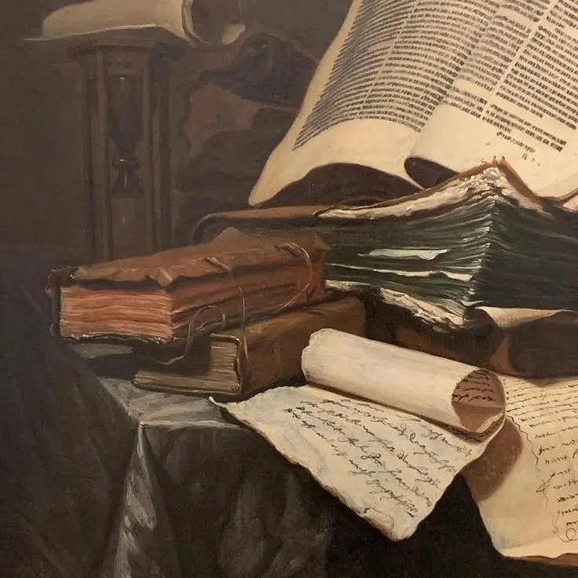

پادزهر
قسمت ۱۳
«اون چیه دستته؟»
شالی با قدمهایی آرام به سمت جان برداشت. هانس همچنان مشغول تعویض لباسش بود تا سه نفری برای یک مهمانی رقص بروند. جان لیوان ویسکی خود را از روی میز برداشت و به رنگ زرد طلایی آن زیر نور چراغ نگاه کرد و کمی آن را در لیوانش چرخاند و با دست چپش کاغذی زرد رنگ را بالا آورد و بدون آنکه به چشمهای شالی نگاه کند گفت:«او یک یادداشت برام گذاشته بود. من اون را در خانه، در شبی که از بیمارستان برگشتم پیدا کردم. من سرد و بیاحساس بودم. یادداشت روی میز پدرم بود. یک میز چوبی بزرگ که اثرات رنگ رفتگی روش موج میزد. کشوهایی که داشت به سختی بیرون میاومدن. نمیدونم چرا واقعا اون میز رو هنوز عوض نکردیم. شاید پدرم خیلی به میزش علاقه داشت. شایدم یادآور تمام کارهایی بود که روی آن میز انجام داده بود. مادرم از یک صفحه از یک دفتر حقوقی زرد رنگ برای نوشتن نامه استفاده کرد. نوشتش اول با درشت و با قلمی محکم شروع شده بود، اما هر چقدر که به انتهای نامه میرسید، به خط کج و آزاردهندهای تبدیل میشد. بر خلاف اصول مادرم نامهاش حس غیراصل بودن میداد. مادرم احساس میکرد که آمادگی لازم برای مقابله با زندگی را ندارد. میگفت که حس میکنه مثل یک بیگانه، یک عجیبالخلق هست، هوشیاریاش اون رو آزار میداد و اون رو از دیوانه شدن میترسوند. "خداحافظ"، این چیزی بود که مامانم نوشته بود، بعد یک لیست از افرادی که میشناخت رو توی نامه تحریر کرده بود. من ششمین نفر در لیست ۲۵ نفره بودم. برخی از اسامی رو میتونستم تشخیص بدم. دوستان دوران دانشآموزی که از هم جدا شده بودن، دکترانش، و آرایشگرش..» در صدای جان بغضی نهان شده بود. کمی مکث کرد و با بیتفاوتی ویسکی خود را بالا کشید. کمی صورتش بخاطر تلخی الکل در هم رفت. بعد اینبار سرش را به سوی شالی برگرداند تا بدن اون را با چشمهایش در آن البسه سرخ ویکتوریایی تحسین کند سپس ادامه داد:«نامهش را نگه داشتم و هیچوقت اون رو به کسی نشون ندادم. گاهی اوقات در طول سالها، وقتی که احساس تنهایی و ترس میکردم و یک صدایی در ذهنم میگفت "مامانم رو میخوام"، نامهاش رو بیرون میآوردم و میخواندمش. به عنوان یادآوری از خود واقعیش. این که چقدر کمتر از همه به من اهمیت میده. این کمکم کرد. طرد شدنی که برای من به عنوان تنها پادزهر برای توهمات باشه.» در همین لحظه هانس در حالی که سعی میکرد پشت لباس خود را مرتب کند از در بیرون آمد و جان به آرامی و آرامشی که مانند همیشه داشت لبخندی به هانس زد و نامه را داخل کشوی میز چوبی بزرگ قدیمی که جابهجای اون اثر رنگ رفتگی و حتی گاهی جاها بلند شدگی رنگ داشت قرار داد. کشوهای میز همچنان سخت باز و بسته میشدند. سپس جان با همان لبخند از جایش بلند شد و به سمت هانس رفت. چرا که هانس همچنان کرواتش را بعد از ساعتها تمرین کمی کج بسته بود. در همین لحظه زمانی که جان به هانس نزدیک شد به جان زمزمه کرد:«میبینم شما دو نفر با هم خوب کنار اومدید.» جان باز لبخند زد و گذاشت دوست عزیزش لبخندی بر روی لبانش داشته باشد.